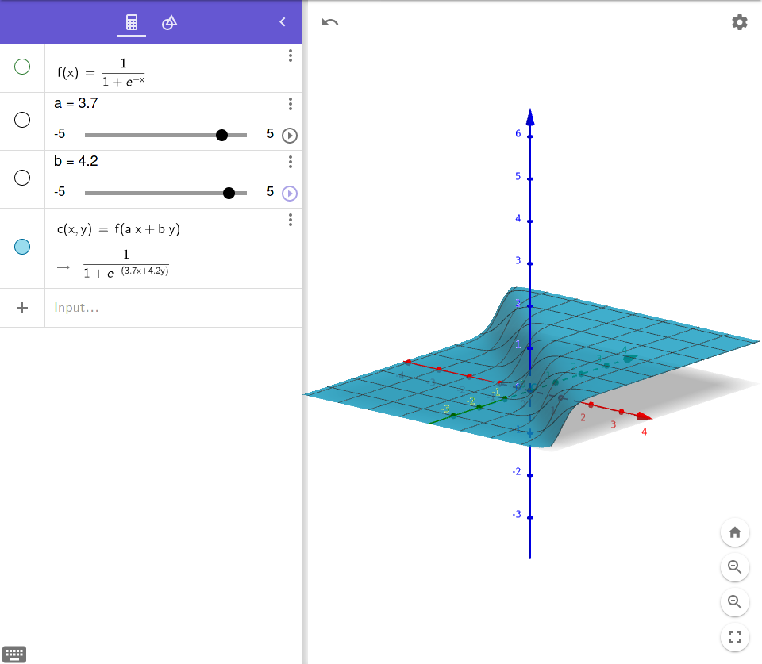
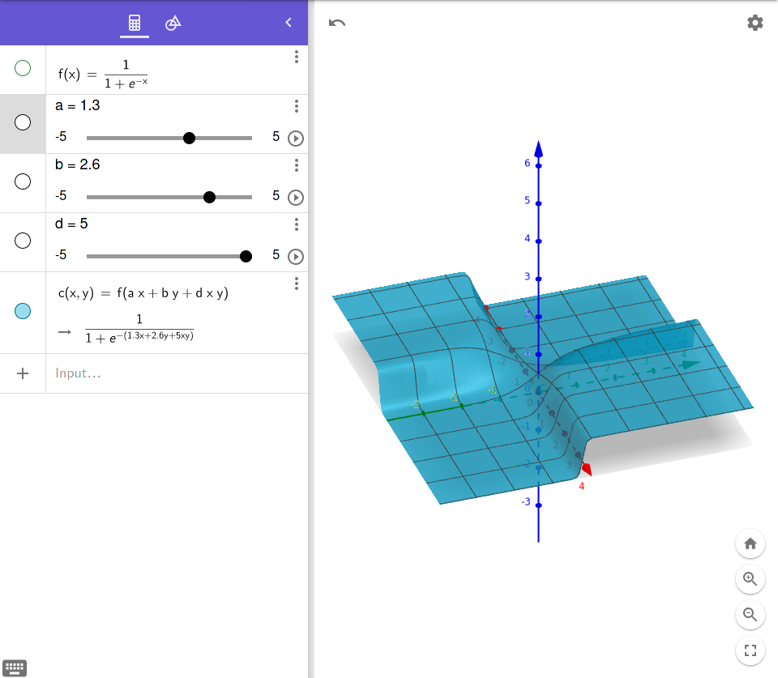
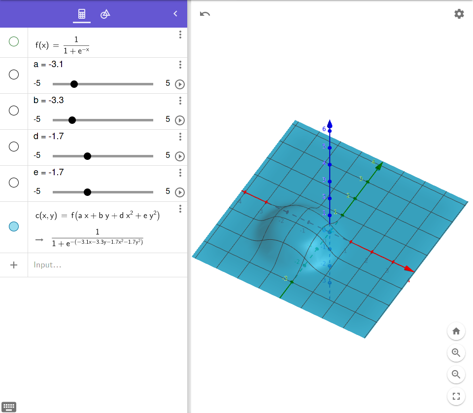

Emma63194 ovo je u biti dobro pitanje, nadao sam se da cete ili uzet to as is, ili ce nekom neka matematicka intucija pomoc, al zaista nije u redu od mene da to ne objasnim.
Kratak odgovor: nelinearnost je u ortogonalnoj dimenziji pa se “ne broji”. Dugi odgovor slijedi u nekoliko skrinova ispod:
Ovo je sigmoida od linearne kombinacije:

ovdje su mi a i b neke “tezine”, a f je sigmoida, nebitno. Bitno je da bi sad klasifikacijska granica bila f(x)=0.5, odnosno presjekli bi ovu plohu sa ravninom z=0.5. Tebi prepustam da si zamislis sto bi dobila: odgovor je lijepi ravni pravac. Razlog tome je sto je funkcija nelinearna kad se gleda po z dimenziji, dok je linearna kad se gleda u x-y dimenzijama.
Novi primjer:

Ovdje ako obratis pozornost na ulaz u sigmoidu, vidit ces da sam promjenio tako da sam dodao “interakcijsku znacajku” - fensi rijec za nelinearnost. Radimo opet istu stvar, presjeces povrsinu sa ravninom z=0.5 i kj dobis ovaj put? ERMAGERD pa crta koju dobis vise nije linearna!! Upravo zbog podataka haha
Zadnji primjer:

Sad sam dodao kvadrate i vidi sta se dobi, slatki mali bulge ^^ naravno kad bi ovo cudo sad presjekla sa z=0.5 dobila bi neku kruznicu. Y iz that? opet nelinearno, samo zato jer su znacajke nelinearne.
TLDR linearna kombinacija znacajki daje linearnu granicu (nakon sto plohu presjecemo ravninom) cak i uz nelinearnu aktivaciju. Ako je kombinacija znacajki nelinearna, granica ce bit nelinearna.